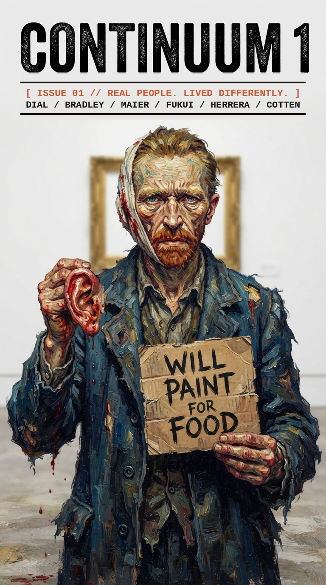

THORNTON DIAL

A self-taught assemblage artist and former industrial metalworker from Alabama, Dial spent decades quietly constructing intricate sculptures and monumental wall assemblages out of discarded industrial flotsam, farm tools, and scavenged metal. Without academic validation or art-market ties, his work remained largely confined to local yard shows until he was noticed in his late 50s.
Medium: Found Object Assemblage
Breakthrough: Age 58
CHARLES BRADLEY
STATUS: STANDBY
No Time For Dreaming (2011)
[Stream // Free Music Archive]
▶ Listen: No Time For Dreaming // Charles Bradley
Credit: Charles Bradley // KEXP at SXSW 2011 // FMA-Limited: Download Only License // Streamed from freemusicarchive.org, not hosted here
Bradley endured decades of homelessness, illness, and blue-collar labor while singing in small clubs under the alias "Black Velvet". Without industry representation or backing, he did not release his debut studio album until he was 62 years old.
Medium: Deep Soul / R&B
Breakthrough: Age 62
VIVIAN MAIER
Working as a private nanny for roughly four decades, Maier took over 150,000 photographs on her Rolleiflex twin-lens camera without showing them to anyone. Her massive archive was discovered accidentally in delinquent storage lockers near the end of her life.
Medium: Street Photography
Discovery: Posthumous
RYO FUKUI
A self-taught Japanese jazz pianist who did not start playing the instrument until age 22. Operating outside established American or Tokyo jazz hierarchies, he developed his own rhythmic, modal technique in Sapporo. Organic global rediscovery decades later elevated his private press albums into cult classics.
Instrument
Modal Jazz Piano
Seminal Works
Scenery (1976) // Mellow Dream (1977)
CARMEN HERRERA

Cuban-American abstract painter Carmen Herrera sold her first major painting at 89 years old and received widespread international recognition in her 90s, maintaining rigid geometric abstraction on her own terms regardless of commercial trends.
Medium: Geometric Abstraction
First Major Sale: 89 Years Old
ELIZABETH COTTEN
After teaching herself to play an upside-down, left-handed guitar as a child, Cotten set music aside for over 40 years while working as a housekeeper. In her 60s, her employers happened to overhear her playing, leading to her recording debut at 63 and a Grammy Award at age 90.
Style
Inverted Left-Handed Fingerpicking
Accolade
Grammy Award at 90